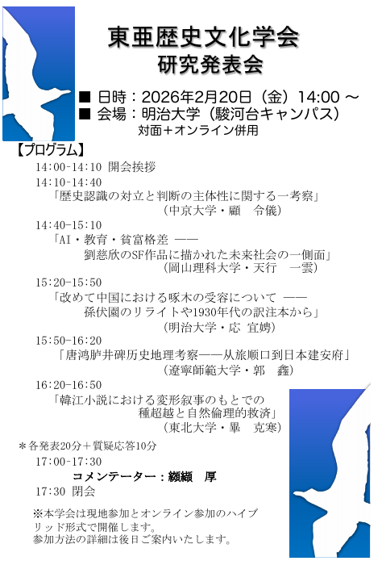

2026年度 東亜歴史文化学会 研究発表会

日本及び中国の大学に所属する研究者が、歴史認識、AIと教育、文学受容、歴史地理、韓江文学などについて研究報告を行いました。
これまでの学術交流
本学会は、山口大学、鹿児島大学、遼寧師範大学、韓国外国語大学、台湾桃園市の南開大学など、日本内外の諸大学を会場として研究大会を開催してきました。

日本及び中国の大学に所属する研究者が、歴史認識、AIと教育、文学受容、歴史地理、韓江文学などについて研究報告を行いました。
本学会は、山口大学、鹿児島大学、遼寧師範大学、韓国外国語大学、台湾桃園市の南開大学など、日本内外の諸大学を会場として研究大会を開催してきました。